Grounded
Minecraft, который мог бы существовать.
Мод для Minecraft 26.3 на Fabric. В нём нет магии, мистики и телепортов: каждая фантастическая механика объяснена как физика, химия или промышленность. Почти всё, что вы знаете, осталось на своих местах — только стало честным.
- Minecraft 26.3
- Fabric Loader 0.19.5+
- Fabric API
- Java 25
- версия 1.2.0
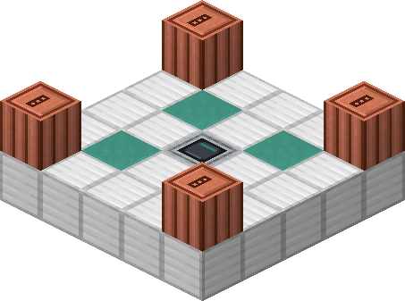
Замысел
Одна проверка: могло ли это существовать?
Если да — остаётся. Если нет — объясняется заново или уходит. Мод не добавляет новый мир, а переосмысляет старый: у большинства предметов и мобов прежнее поведение, но новые имена, облик и голоса. Мир держится на трёх опорах.
🧍Люди
Банды Blackroad на дорогах Верхнего мира и Cinder Company, что добывает серу и руду в вулкане. Нежити нет: ночь опасна не мертвецами, а теми, кто живёт грабежом.
🤖Машины
Наследие рухнувшего индустриального проекта: высотные станции, автоматы, дроны. Они не злые, а незавершённые — выполняют протокол, отданный теми, кого больше нет.
🐾Животные
Настоящие звери остаются зверями. Кости теперь дают животные, а машины роняют металлолом.
Скачать и установить
Установка
Нужны Minecraft 26.3, Fabric Loader 0.19.5 или новее, Fabric API и Java 25. Проще всего — готовый экземпляр для MultiMC: в нём уже есть всё, кроме самой игры, которую лаунчер скачает сам.
MultiMC и Prism Launcher
- Скачайте
Grounded-MultiMC-1.2.0.zip. - В лаунчере: Add Instance → Import from zip → выберите файл → OK.
- В настройках экземпляра (Edit Instance → Settings → Java) выберите Java 25. Если её нет — Adoptium Temurin 25.
- Launch. В первый раз лаунчер скачает Minecraft и Fabric.
Описания Minecraft и Fabric лежат в самом экземпляре, поэтому сервер MultiMC для установки не нужен. В окне версий они помечены как изменённые — так и задумано.
В экземпляре уже вписаны аргументы Java, с которыми игру запускает лаунчер Mojang: MultiMC сам их
не передаёт, и без них Minecraft 26.3 может молча вылетать. Экземпляр, собранный своими руками или скачанный
до версии 1.1.1, — Edit Instance → Settings → Java → JVM arguments:
-XX:StackShadowPages=32 --enable-native-access=ALL-UNNAMED --add-exports java.base/jdk.internal.misc=ALL-UNNAMED
Официальный лаунчер
- Установите Fabric Loader для 26.3 установщиком Fabric.
- Скачайте
grounded-1.2.0.jarи Fabric API для 26.3. - Положите оба файла в папку
.minecraft/mods. - Запустите профиль Fabric.
На сервере мод нужен и серверу, и каждому игроку: те же два файла — в папку
mods сервера.
Язык
Мод написан по-русски, английский поддерживается полностью. Экземпляр для MultiMC запускается на русском; сменить — Настройки → Язык.
Новый мир
Лучше начать новый: рельеф Вершин создаётся при генерации, и в старом мире уже открытые места останутся прежними.
Обновление
Удалите из папки mods старый grounded-…jar и
положите новый: два сразу игра не запустит. Миры сохраняются. Что нового и все версии — на
странице релизов.
Путешествия
Площадки вместо порталов
Телепортов в мире нет. Рамка из обсидиана не зажигается, портал Вершин не открывается,
плода хоруса нет, а 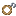ender_pearl) — трос с крюком: он не переносит вас, а
подтягивает. В вулкан и на Вершины летают бортом: за вами прилетают на площадку.
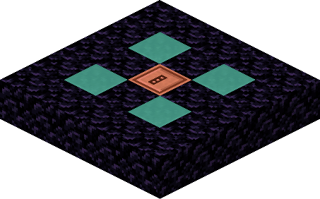
Как вызвать борт
Постройте площадку 5×5 и встаньте на её центр. «За вами вылетели» — стойте 3 секунды, и борт
увезёт вас. Сойдёте раньше — вылет отменится. Центр решает, куда лететь:
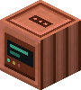 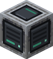
Прибытие
Первый вылет находит твёрдую землю, и через мгновение под вами встаёт такая же площадка. Она строится один раз: разберёте её — чинить придётся самим, фермы блоков нет. Следующие вылеты садятся на неё же. В вулкане лава рядом с площадкой застывает базальтом.
Обратно
Сойдите с площадки прибытия и встаньте на центр снова — борт вернёт вас на ту площадку, с которой вы улетели.
Путь на Вершины
Зонд-пеленгатор летит к крепости. В каждом сундуке её библиотеки лежит Датчик координат — из него и собирается Приёмник координат для площадки.
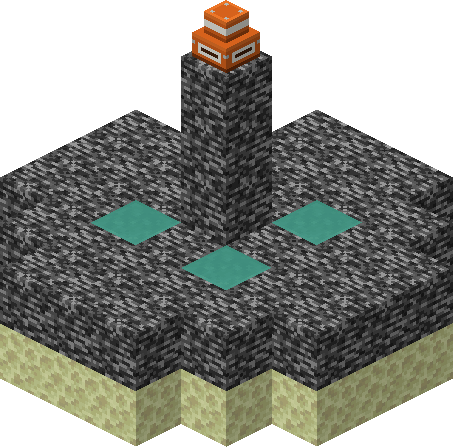
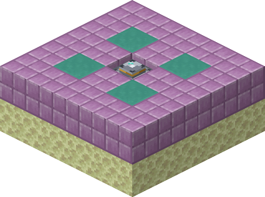
Эвакуация с Вершин
Выходного портала нет. Когда Страж Вершин выведен из строя, пол подиума становится эвакуационной площадкой. В первый раз — запись бортового самописца и титры, потом вы дома; дальше это обычный обратный вылет.
К дальним островам
Врат нет. Вместо них после Стража на главном острове встают площадки переброски. Встаньте на рамку в центре — борт отвезёт к дальним островам, и там появится такая же площадка. Туда и обратно — сколько угодно.
Предметы и рецепты
Что крафтится по-новому
Рецепты, которым нужно было сырьё без честного объяснения, переведены на промышленное: железо, медь, порох, проводку. Ванильные рецепты этих предметов заменены, а не добавлены рядом. Серой подписью — прежний id предмета.
Путь на Вершины
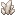
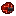
Компас задаёт направление, кварц — резонатор приёмника, проводка — схема. Бросьте — зонд полетит к
крепости. ender_eye
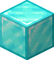
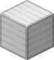
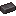
Центр площадки на Вершины. Датчик координат не крафтится — он в библиотеках крепостей.
lodestone
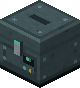
Ячейка на общем складе: у каждого игрока своя, и открывает её любой сейф. Связь держит зонд.
ender_chest
Роботы и свет
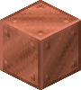
Голова всех роботов, надевается на голову. Обычную тыкву ножницами больше не вырезать.
carved_pumpkin
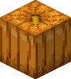
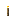
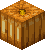
Тыква над факелом — просто лампа: без лица и роботов не собирает. jack_o_lantern
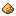
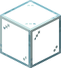
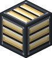
Фосфорный порошок за стеклом. glowstone
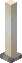
4Топливный стержень над фосфорным порошком — вместо плода хоруса. end_rod
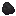
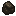
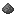
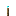
4Уголь и порох: горит серным пламенем. soul_torch
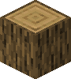
То же пламя в костре. soul_campfire
Модификации и химия
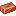
Носитель, на который записывают мод: бумага и медный контакт вместо кожи. book
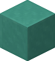
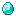
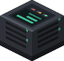
Стол, где моды ставят на снаряжение. enchanting_table
Штатив с колбами над горелкой: здесь варят препараты. brewing_stand
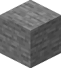
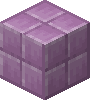
4Сборные панели высотных станций — из камня и железа. purpur_block
Запасы проекта
Три моркови, спрессованные в брикет, в золотой фольге: сытнее свежей и не портится. Из него же варят
препарат ночного зрения — в моркови каротин. golden_carrot
Вытяжка из трёх ломтиков во флаконе под золотым колпачком — сырьё препарата лечения. Не еда.
glistering_melon_slice
Паёк в золотой фольге. Рецепт прежний: слитки вокруг яблока — это упаковка. Ставит на ноги, и им же
платят выкуп за пленника. golden_apple
Боевой рацион — паёк со складов проекта, с полосами опасности на упаковке. Не
крафтится: его только находят. enchanted_golden_apple
Изумруды и медицина
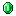
Единственный предмет, который мод добавляет сам. Падает вместо тухлого мяса с головорезов, налётчиков, падальщиков, пленников и обожжённых.
Девять кусочков — изумруд, как у железа и золота.
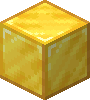
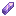
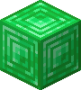
В руке спасает, когда вас вот-вот выведут из строя: ставит на ноги, лечит и защищает.
totem_of_undying
Роботы
Собираются из блоков — голова всегда блок управления
Эти машины собирают из железа, меди и снега, поэтому они роботы — вместо
iron_golem и его родни. Голова каждого — Блок управления, тыквенный фонарь для этого не
годится.
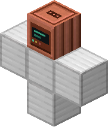
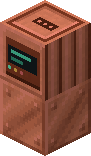
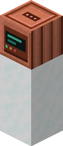
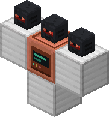
Системы
Механики остались, объяснения — новые
Модификации
На снаряжение ставят моды. Мод — расходник,
Картридж мода — носитель, Записанный картридж — готовый мод, 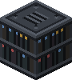 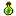 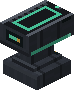 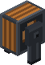
Проводка
Редстоун — Проводка: платы и провода рухнувшего проекта, их достают из породы. Одиночный провод ложится площадкой. Сигнальный факел, Электролампа.
Препараты
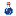potion) варят на Химическая установка: базовые, метательные,
аэрозольные. Эффекты объяснены химией — например, invisibility стала маскировкой.
Станции
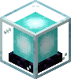 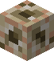
Выбыл из строя
Игрок не погибает, а выбывает из строя — и возвращается в игру в точке появления. Животные и люди мира погибают, как прежде: они не возвращаются.
Капсулы сборки
*_spawn_egg — капсулы: из них собирают машину или выпускают существо. На каждой — портрет
того, кто в ней.
Религиозной символики, суеверий и призраков в игре нет — ни в текстах, ни в текстурах. Даже прицел стал кольцом.
Мир
Вулкан и Вершины
Вулкан
Бывший the_nether — действующий вулкан, где Cinder Company добывает серу и руду. Здесь
Вулканическая порода, вулканические пустоши и крепости, Слиток жаропрочного сплава. Работают машины
вулкана — дроны-горелки, аэростаты, шагающие погрузчики. Попасть сюда можно только бортом.
Вершины
Бывший the_end — острова на тонких опорах над морем облаков: ничто не висит в
воздухе. День и ночь под тёмным высотным небом, первый прилёт — утром. Острова из
Известняк, на них пустые высотные станции из сборных панелей, рядом — дирижабли, на борту —
Ранцевое крыло. Главный остров охраняет
Страж Вершин, его питают Зарядный излучатель. В финале вместо поэмы — запись бортового
самописца.
Бестиарий
Кого вы встретите
Каждый переделанный моб перерисован целиком, и у каждого свой голос: машины говорят своими родными звуками через робот-фильтр.
Blackroad — банды Верхнего мира
Разбойники дорог. Выходят ночью, грабят и берут пленных. С головорезов, налётчиков, падальщиков и пленников падают кусочки изумруда.
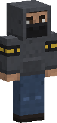
Головорезzombie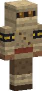
Пустынный налётчикhusk- Речной падальщик
drowned - Пленник
zombie_villager - Химик
witch - Разбойник
pillager - Громила
vindicator - Лошадь банды
zombie_horse - Верблюд налётчиков
camel_husk - Наутилус падальщиков
zombie_nautilus
Cinder Company — люди вулкана
Добытчики в респираторах. Обожжённые — рабочие, отравленные газом: не тронете — не тронут.
- Старатель
piglin - Надзиратель
piglin_brute - Обожжённый
zombified_piglin
Автоматы
Наземные машины проекта. Стрелки — автоматы на светлой некрашеной стали: их видно ночью.
- Автомат-стрелок
skeleton - Обледеневший автомат
stray - Болотный автомат
bogged - Пустынный автомат
parched - Тяжёлый автомат
wither_skeleton - Автомат-сапёр
evoker - Механическая лошадь
skeleton_horse - Самоходная мина
creeper - Верхолаз
enderman - Ползун
endermite - Ремонтник
silverfish - Маскировочный автомат
creaking
Дроны и аэростаты
- Ночной дрон
phantom - Ударный дрон
vex - Дрон-курьер
allay - Пневмодрон
breeze - Дрон-горелка
blaze - Подводный дрон
guardian - Дрон-глушитель
elder_guardian - Аэростат
ghast - Транспортный аэростат
happy_ghast
Рои
Кубы — роевые роботы из модулей. Разбитый рой, обычный или жаростойкий, распадается на рои поменьше.
- Рой
slime - Жаростойкий рой
magma_cube - Серный сборщик
sulfur_cube
Роботы и тяжёлые машины
- Железный робот
iron_golem - Медный робот
copper_golem - Снегомёт
snow_golem - Шагающий погрузчик
strider - Выдвижная турель
shulker - Глубинный страж
warden - Штурмовик
wither - Страж Вершин
ender_dragon
Животные
Животные остаются животными. Одичавший вепрь — Бешеный вепрь, а не нежить.
- Бешеный вепрь
zoglin